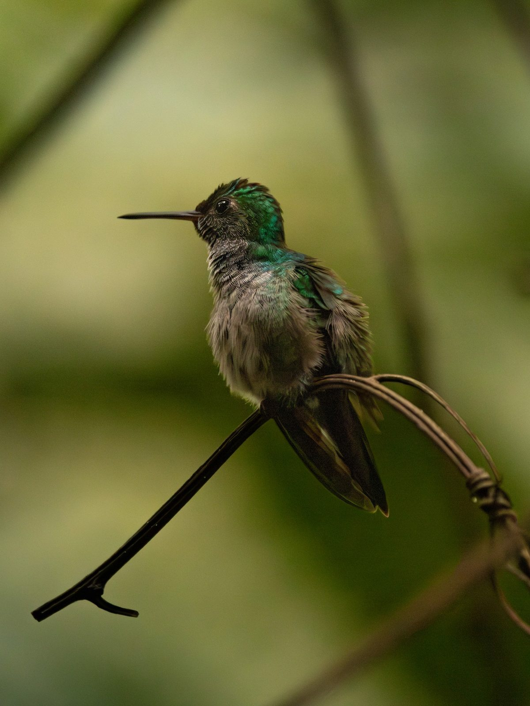

Blue-chested Hummingbird
Polyerata amabilis (Gould, 1853)
Spanish: Amazilia Amable
The Blue-chested Hummingbird (Polyerata amabilis) is a hummingbird in the subfamily Trochilinae (mountain gems, bees and emeralds), tribe Trochilini (emeralds). It weighs about 4.3 g and its bill is 21.3 mm long. It lives in Panama, Costa Rica, Colombia, Ecuador and Nicaragua. Its IUCN Red List status is Least concern, with a decreasing population.
See it in the explorer eBird page ↗
At a glance
- Weight
- 4.3 g, about 4 paperclips
- Bill
- 21.3 mm
- Lives in
- Forest
- Moves
- Stays put all year
- Red List status
- Least concern, decreasing
Its place in the family
- Family Trochilidae hummingbirds
- Subfamily Trochilinae mountain gems, bees and emeralds
- Tribe Trochilini emeralds
- Genus Polyerata
Where it lives · 6 countries
- Panama
- Costa Rica
- Colombia
- Ecuador
- Nicaragua
- Honduras rare visitor
Others in the genus Polyerata
- Purple-chested Hummingbird Polyerata rosenbergi
- Charming Hummingbird Polyerata decora
Sources
Names: eBird/Clements Checklist (Cornell Lab of Ornithology). Groups: Dickinson & Remsen (2013) and McGuire et al. (2014). Weight, bill, habitat and movement: AVONET (Tobias et al. 2022, CC BY 4.0). Countries: BirdLife International DataZone, checked against eBird records via GBIF. Red List status and trend: BirdLife International, the IUCN Red List authority for birds.